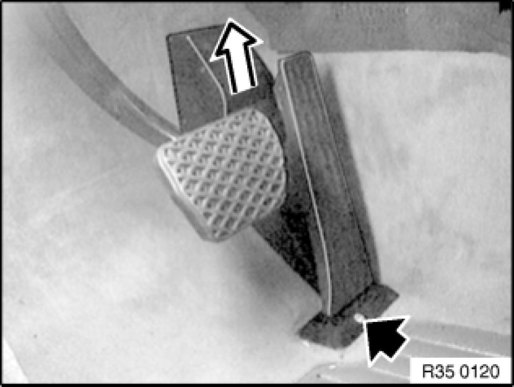
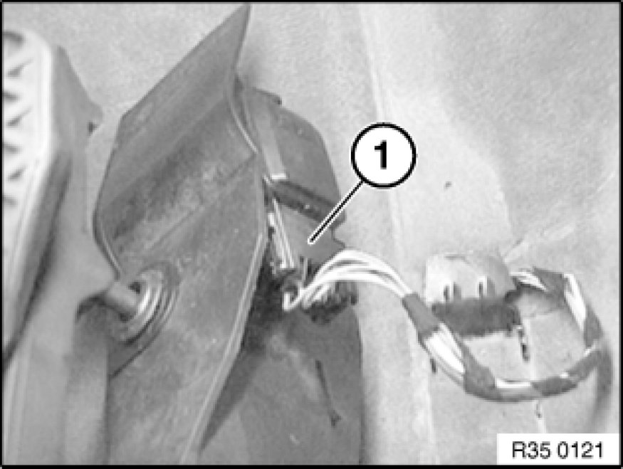

Accelerator Pedal: Service and Repair
35 40 001 - Removing and installing or replacing accelerator pedal module

Take off cap.
Release screw.
Pull accelerator pedal module upwards out of fixture.
Installation:
Tightening torque 35 40 1AZ [1][2]Accelerator Pedal.

Pull off plug (1).
Remove accelerator pedal module.

Important!
Accelerator pedal module can only be replaced completely with adapter plate.